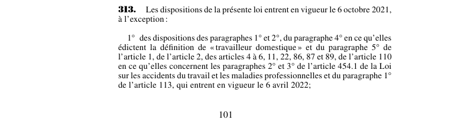

art-313-LMRSST : calendrier entrée en vigueur
Un article du wiki ⚖️ Recueil législatif
📄 PDF officiel (page 101) · 🌐 LegisQuébec
Texte officiel : capture du PDF

🔗 Ouvrir a cette page : LMRSST.pdf : page 101
En bref
Disposition transitoire et finale de la LMRSST : il établit une disposition transitoire ou finale.
- Type : disposition transitoire · Cible : Dispositions transitoires et finales.
Ce qui change
- Les dispositions de la présente loi entrent en vigueur le 6 octobre 2021, à l'exception : 1° des dispositions des paragraphes 1° et 2°, du paragraphe 4° en ce qu'elles édictent la définition de « travailleur domestique » et du paragraphe 5° de l'article 1, …
Portée et effet
Disposition transitoire/finale adoptée dans le cadre de la réforme de 2021 (LMRSST). Le chapitre V regroupe les dispositions transitoires et finales (entrée en vigueur progressive, mesures de transition). Le libellé exact figure dans la capture officielle ci-dessus.
Voir aussi
- 🗓️ Entrée en vigueur : 6 octobre 2021 (voir art. 313 LMRSST)
- 📚 Chapitre : Chap. V : transitoires et finales
- ↑ Loi : LMRSST
Pages qui pointent ici (313)
- art-1-LMRSST, mod. art. 2 LATMP Recueil législatif
- art-10-LMRSST, mod. art. 32 LATMP Recueil législatif
- art-100-LMRSST, mod. art. 358.4 LATMP Recueil législatif
- art-101-LMRSST, mod. art. 359 LATMP Recueil législatif
- art-102-LMRSST, mod. art. 359.1 LATMP Recueil législatif
- art-103-LMRSST, insertion LATMP après art. 359.1 Recueil législatif
- art-104-LMRSST, mod. art. 361 LATMP Recueil législatif
- art-105-LMRSST, mod. art. 363 LATMP Recueil législatif
- art-106-LMRSST, mod. art. 364 LATMP Recueil législatif
- art-107-LMRSST, mod. art. 365 LATMP Recueil législatif
- art-108-LMRSST, mod. art. 433 LATMP Recueil législatif
- art-109-LMRSST, mod. art. 454 LATMP Recueil législatif
- art-11-LMRSST, mod. art. 33 LATMP Recueil législatif
- art-110-LMRSST, insertion LATMP après art. 454 Recueil législatif
- art-111-LMRSST, mod. art. 455 LATMP Recueil législatif
- art-112-LMRSST, articles à loi sont modifiés remplacement Recueil législatif
- art-113-LMRSST, mod. art. 461 LATMP Recueil législatif
- art-114-LMRSST, mod. art. 462 LATMP Recueil législatif
- art-115-LMRSST, mod. art. 463 LATMP Recueil législatif
- art-116-LMRSST, mod. art. 464 LATMP Recueil législatif
- art-117-LMRSST, mod. art. 465 LATMP Recueil législatif
- art-118-LMRSST, mod. art. 467 LATMP Recueil législatif
- art-119-LMRSST, mod. art. 586 LATMP Recueil législatif
- art-12-LMRSST, mod. art. 38 LATMP Recueil législatif
- art-120-LMRSST, mod. annexe I LATMP Recueil législatif
- art-121-LMRSST, loi modifiée remplacement partout où ceci Recueil législatif
- art-122-LMRSST, mod. art. 1 LSST Recueil législatif
- art-123-LMRSST, mod. art. 3 LSST Recueil législatif
- art-124-LMRSST, insertion LSST après art. 5 Recueil législatif
- art-125-LMRSST, mod. art. 10 LSST Recueil législatif
- art-126-LMRSST, mod. art. 19 LSST Recueil législatif
- art-127-LMRSST, mod. art. 27 LSST Recueil législatif
- art-128-LMRSST, mod. art. 29 LSST Recueil législatif
- art-129-LMRSST, mod. art. 32 LSST Recueil législatif
- art-13-LMRSST, mod. art. 39 LATMP Recueil législatif
- art-130-LMRSST, mod. art. 33 LSST Recueil législatif
- art-131-LMRSST, mod. art. 34 LSST Recueil législatif
- art-132-LMRSST, mod. art. 37 LSST Recueil législatif
- art-133-LMRSST, mod. art. 40 LSST Recueil législatif
- art-134-LMRSST, insertion LSST après art. 40 Recueil législatif
- art-135-LMRSST, mod. art. 42.1 LSST Recueil législatif
- art-136-LMRSST, mod. art. 46 LSST Recueil législatif
- art-137-LMRSST, insertion LSST après art. 48 Recueil législatif
- art-138-LMRSST, mod. art. 49 LSST Recueil législatif
- art-139-LMRSST, mod. art. 51 LSST Recueil législatif
- art-14-LMRSST, mod. art. 43 LATMP Recueil législatif
- art-140-LMRSST, insertion LSST après art. 51.1 Recueil législatif
- art-141-LMRSST, mod. art. 52 LSST Recueil législatif
- art-142-LMRSST, mod. art. 56 LSST Recueil législatif
- art-143-LMRSST, mod. art. 58 LSST Recueil législatif
- art-144-LMRSST, mod. art. 59 LSST Recueil législatif
- art-145-LMRSST, mod. art. 60 LSST Recueil législatif
- art-146-LMRSST, mod. art. 61 LSST Recueil législatif
- art-147-LMRSST, insertion LSST après art. 61 Recueil législatif
- art-148-LMRSST, mod. art. 62 LSST Recueil législatif
- art-149-LMRSST, mod. art. 62.4 LSST Recueil législatif
- art-15-LMRSST, mod. art. 44 LATMP Recueil législatif
- art-150-LMRSST, articles à loi sont remplacés suivants Recueil législatif
- art-151-LMRSST, mod. art. 71 LSST Recueil législatif
- art-152-LMRSST, mod. art. 72 LSST Recueil législatif
- …